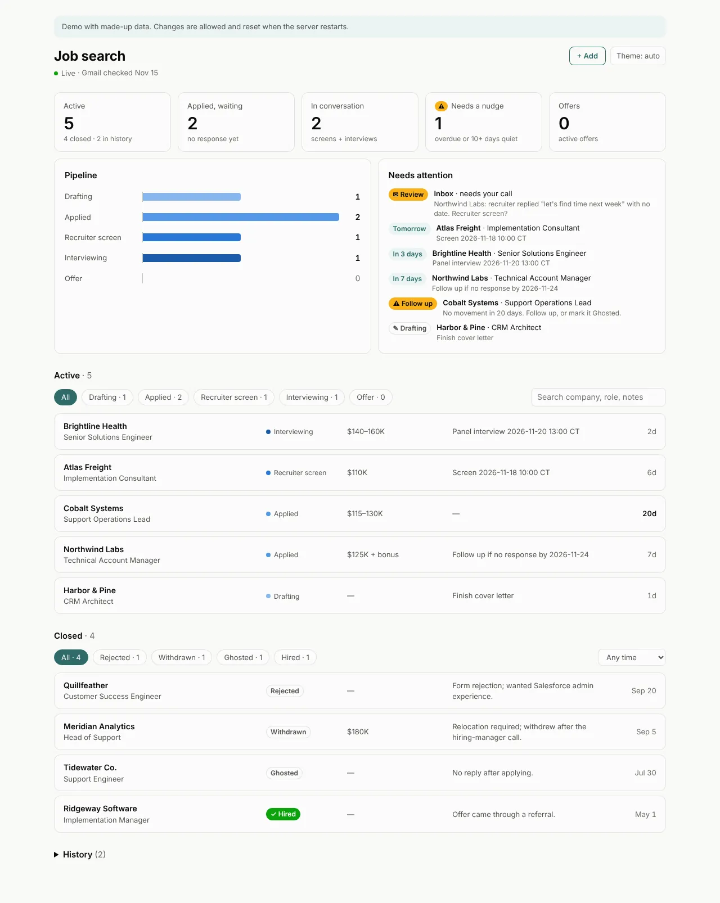
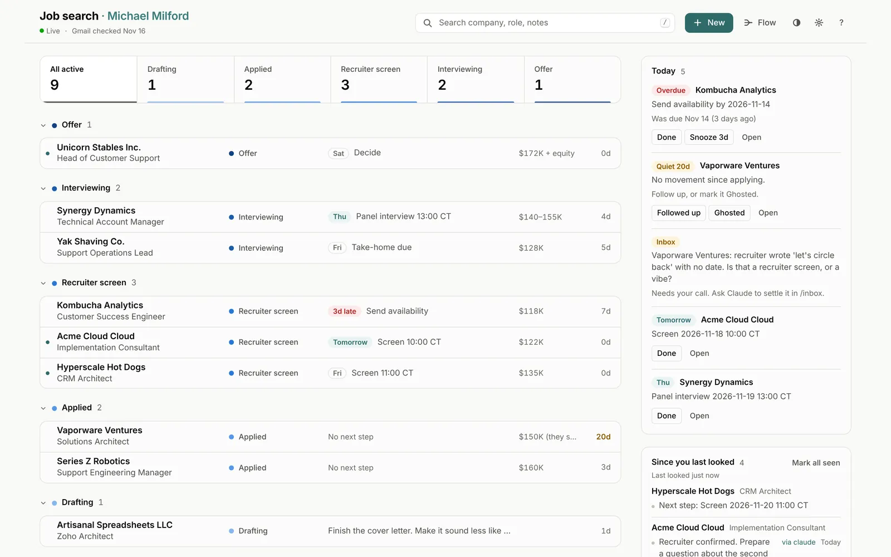

Where things stand, then what changed
Version one worked. That was the problem. It had summary cards, a bar chart and a box called "Needs attention," all of it accurate, and I still had to read the whole page to find out what to do next. The redesign puts the stages across the top, groups applications by stage, and moves everything that needs me into a rail on the right.
The call Where things stand goes first. What changed overnight goes right after it.
Today collects overdue next steps, anything quiet for 10+ days, and calls the email sync couldn't make on its own. Each one gets a button: Done, Snooze, Followed up, or Ghosted.
Since you last looked lists changes you didn't make yourself. Usually that means Claude, which reads my Gmail (read-only) and updates statuses when a rejection or an interview invite shows up. Every change it makes is signed on the timeline.



